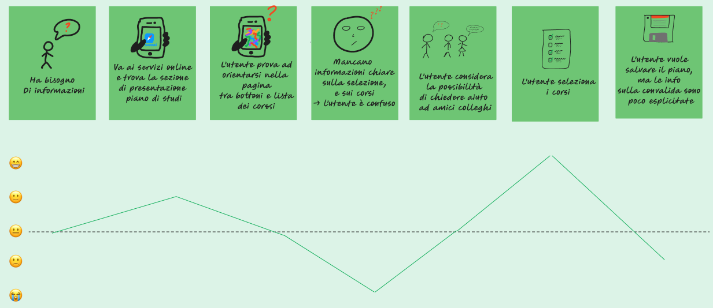

Personas piano di studi
Descrizione:
Personas e User Journey di uno studente che manifesta particolari difficoltà nell’interfacciarsi con il sistema di compilazione del piano di studi.
Personas:
 User-Journey
User-Journey:

Scenario D'Uso:
È il 27 settembre sera e Davide si sta rilassando sul divano, guardando il suo programma televisivo preferito. All’improvviso il telefono inizia a squillare: stanno arrivando numerosi messaggi
sul gruppo Telegram del Politecnico, poiché molti studenti non hanno ancora compilato il piano di studi, nonostante la scadenza sia dopo soli due giorni, e non sanno bene come districarsi nel sito.
Davide entra nel panico, si era completamente scordato di questa scadenza! Corre in camera, accende il PC ed effettua l’accesso al sito dei Servizi Online.
Scorre la pagina fino a trovare la sezione dedicata alla compilazione del Piano di Studi.
Sin dall’inizio Davide appare disorientato, in quanto la pagina si presenta molto confusionaria: non sono presenti informazioni adeguate nè per quanto riguarda I singoli corsi,
nè sul meccanismo di compilazione stessa.
Così Davide decide di chiamare il suo amico Matteo, per porgli alcune domande riguardanti il Piano di Studi. La chiamata si dilunga, anche Matteo si mostra insicuro e di conseguenza
fornisce all’amico informazioni non del tutto corrette, pur confessando che lui si era dovuto rivolgere alla segreteria studenti, poiché non aveva ben compreso alcune regole riguardanti gli esami in soprannumero. Sono le 23:40, Davide è stanco dopo un’intensa giornata di studio, e la mattina seguente la sua sveglia suonerà alle ore 6:00, essendo egli uno studente pendolare. Di conseguenza Davide, senza aver letto completamente il contenuto della pagina, seleziona i corsi con i nomi che lui ritene più interessanti, senza interessarsi sull’approfondimento degli argomenti trattati durante tali corsi. Prosegue poi nell’operazione di salvataggio, ma anche questa si dimostra tutt’altro che intuitiva. Vi è la possibilità di salvare il piano definitivamente, oppure di conservarlo come bozza, tuttavia la differenza effettiva tra queste due modalità non è correttamente spiegata.
Davide così decide di salvarlo in via definitiva, per non dover ripensare più a questa faccenda complicata, e si dirige a letto.